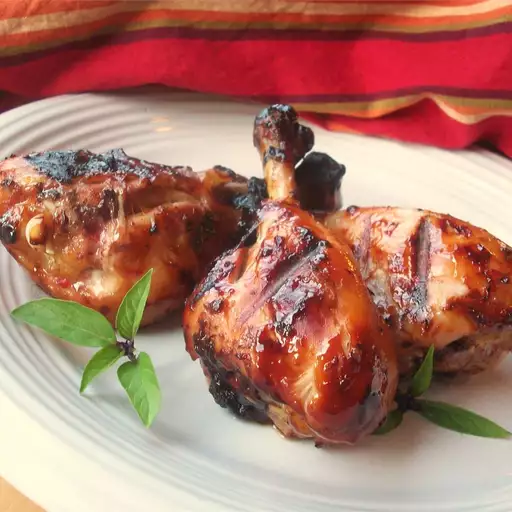

Chili Chicken

Description
A tasty version of drumsticks with a bit of sweetness and spiciness. Thai sweet chili sauce adds an Asian flair.
Ingredients
- 2 tablespoons honey
- 5 tablespoons sweet chili sauce
- 3 tablespoons soy sauce
- 12 chicken drumsticks, skin removed
Steps
- In a large bowl, mix together the honey, sweet chili sauce and soy sauce. Set aside a small dish of the
marinade for basting.
Place chicken drumsticks into the bowl. Cover and refrigerate at least 1 hour.
- Preheat an outdoor grill for medium-high heat.
- Lightly oil the grill grate. Arrange drumsticks on the grill. Cook for 10 minutes per side, or until juices
run clear.
Baste frequently with the reserved sauce during the last 5 minutes.